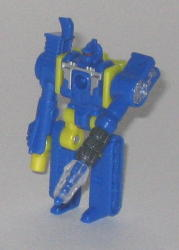
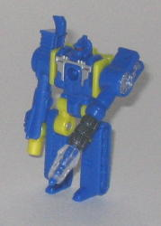
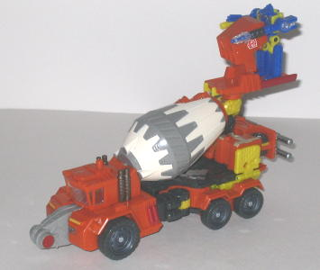
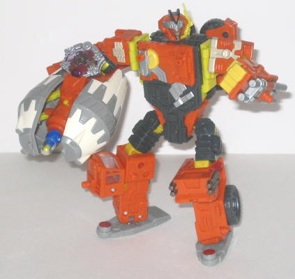

Quickmix
w/ Stripmine (Cybertron)
Quickmix
w/ Stripmine (Cybertron)
 Stripmine
Stripmine
 

Allegiance
: Minicon
Size
: Mini-Con
Difficulty of Transformation
: Easy
Color Scheme
: Moderately dark blue,
dull yellow, and some clear plastic, silver, metallic brownish gunmetal
gray, and moderately dark red
Individual Rating
: 6.6
Stripmine's vehicle mode
is a mobile mining drill vehicle. This mode looks very good for a a Minicon,
with only a few, very minor extras-- namely, it's a tad obvious the treads
are the robot feet, but even then it's easily overlooked, and not much
can be done about it at this scale anyways. The color scheme of blue and
yellow goes together pretty well, and the yellow, thankfully, isn't that
bright. There's also a pretty good amount of mold detailing on this little
guy, with the treads especially well-done. There's even a little flip-up
satellite dish! What really hurts this mode (and the robot mode as well),
however, is that there's almost no paint detailing on the entire figure--
only part of the drill, the robot chest, and the robot head visor are painted.
And given all the mold detailing this guy has, he really could've used
some more paint. There are a few other, more minor, oddities about this
figure as well. For one, there aren't any moving parts in this mode at
all, beyond the aforementioned flip-up dish. The drill can't rotate, and
even the treads have no little wheels on the bottom of them! Also, the
Minicon port is hidden between the leg-treads in this mode, but it also
can't be powerlinked to a larger Transformer, it's so far in-- this is
certainly odd, as this is the only Minicon who CAN'T attach to a larger
TF in their vehicle mode, and it'll look pretty odd having him hang off
a larger TF by his robot mode chest...
Stripmine's transformation
is similar to
Armada Buzzsaw's
, so the robot
mode design is also rather similar, in that the vehicle treads become feet
and the main parts of the vehicle mode split in half to become the arms.
Because of this, Stripmine has no actual hands-- his left arm is a drill
and his right arm is... a peg, which I guess should be a gun of some sort.
The right arm peg-gun does look a little odd, but I have no problem with
the drill-arm. The head design looks pretty cool, very Minicon-ish, and
looks like a near-copy of
Signal Flare's
head. His articulation is roughly average for a Minicon-- he can move back-and-forth
at the shoulders, hips, and knees.
Stripmine is an above-average
Minicon, with a decent vehicle mode and a very nice robot mode. He's got
tons of mold detailing, and a good color scheme, but unfortunately his
severe lack of paint detailing and lack of moving parts in vehicle mode
do hurt him a bit.
Quickmix


Allegiance
: Autobot
Size
: Voyager (Mega)
Homeworld
: Giant Planet
Cyber Key Code
: ve37
Difficulty of Transformation
: Medium
Color Scheme
: Orange, dark charcoal
gray, light gray, dull yellow, and some grayish white, slighly bluish silver,
moderately dark red, moderately dark blue, metallic brownish gunmetal gray,
and clear plastic
Rating
: 8.0
Quickmix's robot mode
is a cement mixer, much like the rather obscure G1 toy of the same name.
Overall, though this mode does have some good features, it has some pretty
obvious extras and gaps in it. For one, the left robot arm is just RIGHT
THERE on the back end of the vehicle, with very little attempt made to
hide it, and the robot head on the backside isn't much more hidden than
that either.. It's also pretty obvious where the upper robot legs are on
the sides of this mode, and that one of the robot arms is connected to
the mixing cauldron. The robot feet sticking out of the front side of the
vehicle mode are also blatantly obvious and don't fit in shape with their
surrounding parts at all, and there is a rather large gap below the mixing
cauldron, though at least this makes the manual turning of the cauldron
or the activation of the Cyber Key gimmick a bit easier to do. On the upside,
there's TONS of mold detailing on this figure, which makes it easier to
pretend that he's a massive Giant Planet figure. He also has a fair amount
of paint detailing to go along with it, and his overall color scheme of
orange, yellow, and gray, though not particularly outstanding, certainly
doesn't clash either, and is appropriate for a construction vehicle. Quickmix
has two Powerlinx ports accessible in this mode, one on the top of the
cockpit piece and one on the back end. A much cooler way for him to interact
with his Minicon, however, is to use the bucket assembly behind his mixer
cauldron-- Stripmine can fit on this assembly in either robot or vehicle
mode and "drive" Quickmix! Quickmix's Cyber Key gimmick is also really
cool-- insert his Key into its slot on the side of the mixer cauldron,
and the cauldron splits in half to reveal a missile launcher! Certainly
not something you were expecting from a cement mixer, and it gives Quickmix
some much-needed firepower.
Quickmix's robot mode
is definitely the better of the two modes, and like all of the "big" Giant
Planet toys, is thoroughly awesome in this mode. For one thing, his proportions
are spot on, with the sole exception of his fist, which is slightly bigger
than it should be, but that's obviously easily overlooked. His detailing
is just as good in this mode as it is in his vehicle mode, and the paint
detailing on the chest creates a "sash" look that's pretty creative. The
robot head is also has a very cool design to it, with the core design being
a spruced-up version of Quickmix's G1 head, and the "radio communicator"
mounted on the side of his head also looks pretty cool and adds a unique
flair to it. Quickmix technically only has a visor, but the clear plastic
making up said visor is segmented into what look like eyes, which is rather
interesting. Quickmix's articulation is superb, as he's able to move at
the head, shoulders (at three points), elbows (at two points), hips (at
two points), knees (at two points), and ankles. And given that he's not
back-heavy, there's not much of a limit on the amount of poses you can
put this guy in. He also has two more Powerlinx ports accessible in this
mode, both on his chest. The only problems I really have with this mode
are A. The Minicon bucket assembly on the backside of his right cement
mixer-arm doesn't really go anywhere and gets in the way of articulation
a bit, not to mention it looks odd; and B. A more minor flaw is that the
wheels on his back don't really click into place anywhere and stick out
a bit from the back, but again, this is easily overlooked.
Cybertron Quickmix's
vehicle mode is a bit sub-par for a Cybertron toy, but it certainly looks
like gold compared to the other Giant Planet characters, and his robot
mode is almost as good as his other planet mates'. Thus, overall he's the
best Giant Planet toy, in my opinion. Mildly recommended.
Quickmix Bio
:
Quick-thinking, intuitive and totally
loyal to the Giant Planet and its inhabitants, Quickmix serves as right
hand mech to Metroplex. It is he who first confronts Menasor over the evil
robot's betrayal of the Giant Planet's traditions, and who encourages Metroplex
to avoid becoming involved in the affairs of the Autobots . He rarely fights,
preferring his role as a builder and repairman, but when the safety of
his home world is threatened, he never backs down.
Strength: 7.0
Intelligence: 9.0
Speed: 4.0
Endurance: 7.0
Rank: 8.0
Courage: 8.0
Fireblast: 9.0
Skill: 7.0
Review by Beastbot
Back to Transformers:
Cybertron Index